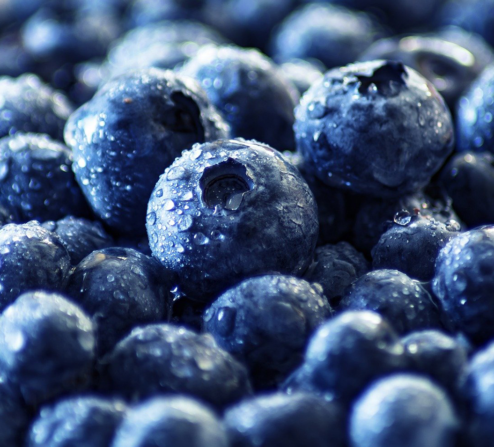
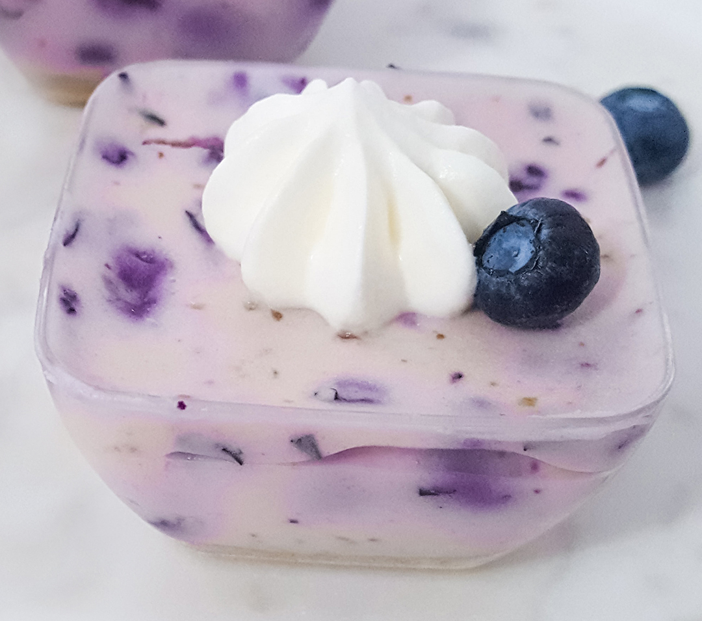
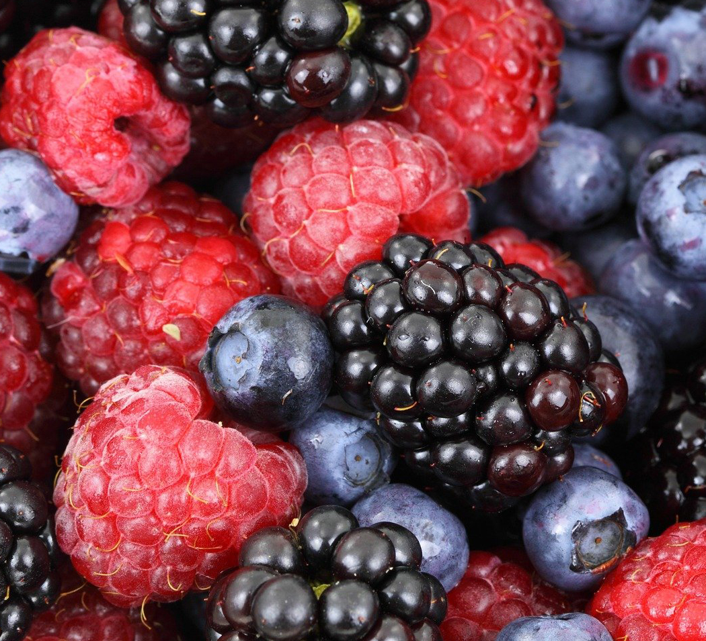

About us

We are a small vegan yoghurt manufacture in Plymouth.
Our mission is to serve our customers with the best vegan products,
which are premium quality & eco-friendly for optimum health,
with careful selection of the best natural ingredients.
For this reason, our products are exclusively plant-based,
like coconut, almond, and soy milk. We offer a wide variety of flavours to suit all tastes (we invite you to look at our range of yoghurts, yoghurt shakes, and cakes).
Our packaging is eco-friendly and 100% biodegradable. We use bioplastics which are practically plastics made from plants. The starch within most plants can be used to form plastic polymers. Our bioplastic bags, pots, and boxes are made from corn, so you won’t leave any carbon footprint behind with them when you buy from us.
Our packaging is eco-friendly and 100% biodegradable. We use bioplastics which are practically plastics made from plants. The starch within most plants can be used to form plastic polymers. Our bioplastic bags, pots, and boxes are made from corn, so you won’t leave any carbon footprint behind with them when you buy from us.
Catering service
We cater for all kinds of events, with reasonable prices, and excellent service. Our buffets are served for a minimum of 6 people and we can cater for weddings and family events with up to a hundred guests. (This includes free delivery within Plymouth.) Please fill out our handy form for a quick quote, and we will be in touch with you promptly to discuss your catering needs. 
Benefits of living the vegan life
 We support a healthy, and eco-friendly lifestyle and help people with food intolerance and allergies with safer and healthier choices. We live the vegan life every day, all year round, and enjoy its health benefits in our lives. We believe in pure plant-based nutrition therefore none of our products have any animal ingredient, neither milk nor eggs. Veganism is more than a diet though, it is also about being kind to animals and against all forms of exploitation of them.